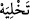
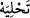

genelleştirirse duâsı kabûl edilir.” Şu halde kişilerin sâdece kendisi için duâ etmemesi
sünnettir.
el-Esrâru’l-Muhammediyye’de şöyle der: “Bilesin ki imâmın duâ ederken çoğul
siygası değil de tekil siygası kullanarak sâdece kendisi için duâ etmesi mekruhtur.
Rasûlullah (s.a.) şöyle buyurmuştur: “Bir kul bir topluluğa imam olur da onları
bırakıp sâdece kendisi için duâ ederse onlara hıyânet etmiş olur.”[38] Bu hadîsi
Sevban rivâyet etmiştir.
Esasen tek başına bile olsa evlâ olan, yine çoğul siyga kullanarak kendisine, ana-
babasına, atalarına, çocuklarına, kardeşlerine, sâlih mü’min dostlarına niyet ederek
onları da duâsına katmak, duâsının bereketine onları da nâil etmektir. Bütün bu
şahısların himmetlerinin ve rûhânî teveccühlerinin bereketi de böylece duâ edene
ulaşmış olacaktır.
Seleften hattâ Hz. Peygamber (s.a.)’den rivâyet edilir ki duâsını böyle genel tutan
kimseye duâda andığı bütün mü’min erkek ve kadınların sayısınca hasene verilecektir.
Yâni, duâ ederken onlara kalben niyet ettiği takdirde. Sen de bunu iyi anla ve bütün
duâlarında bununla amel et.” el-Esrâr’ın ifâdeleri burada bitti.
et-Te’vîlât’ta şöyle der: “Rabbimiz! (Amellerin) hesap olunacağı gün” bugün, ezelde
bütün nefislerin kemâliyyet ve noksâniyyetleri için Allah’ın hesâbından olan gündür.
“Beni, ana-babamı ve mü’minleri bağışla.” Yâni kendi varlığımı görmemem için beni
mağfiret sıfatınla örtüp yok et. Çünkü o benimle Sen’in arana giren bir perdedir.
Ey Câmî her iyi ve kötünün hamurunun mayası sensin
Her şeyden kurtulmak sana gerek ise kendinden kaç
Var oluşuma sebep olan babalarımla analarımı da bağışla ki bana perde olmasınlar,
Sen’i görmemi engellemesinler.”
Fakir (Bursevî) der ki: İbrâhim (a.s.) hem bağışlanmak için duâ ediyor hem de bunu
kıyâmet gününe bağlıyor. Çünkü kıyâmet günü son gün olması hasebiyle o gün muhâsebe
ve münâkaşadan kurtulmak insanı ebedî kurtuluşa ve çeşitli dereceleri kazanmaya
götürür. Çünkü tahliyeden ( , temizlemeden, boşaltmadan) sonra mutlaka tahliye (  süsleme ve bezeme) gelir. Böylece daha mühim ve esas olan şey öne alınmış
olmaktadır. Ayrıca bugünün şiddetinden dolayı da bağışlanma kıyâmet gününe
bağlanmıştır.
Fudayl b. Iyâz da bu günün vereceği sıkıntıyı düşünerek şöyle demiştir: “Ben ne bir
mukarreb/Allah yakın kılınmış bir meleğe, ne bir mürsel/Allah tarafından gönderilmiş
peygambere, ne de sâlih bir kula imrenirim. Bunların hepsi de o günü ve o günün
korkunçluklarını görmeyecek mi? Ben sâdece hiç yaratılmamış olana imrenirim. Çünkü
o, kıyâmeti de, kıyâmetin korkunçluklarını da, sıkıntısını da görmeyecek.”
Ebu Bekir Vâsıtî der ki: “Biri hayatta, diğeri ölüm esnasında, öbürü de kıyâmet
gününde olmak üzere üç devlet (saâdet) vardır. Hayattaki devlet, Allah’a itaâtle ömür